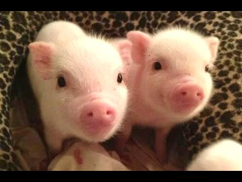

 There are many types of animals.Categories often used to classify animals are ivertebrates, fish, amphibians, birds, reptiles, and mammals. Invertebrates do not have a backbone. Fish use their gills to breathe. Amphibians live in both the water and on land. Reptiles are cold blooded. Birds are warm blooded and have feathers. Mammals have either hair or fur.
Some of my favorite animals include mini pigs, goats, dogs, and tigers. Mini pigs are a stunted version of traditional pigs and are often kept as pets just as dogs are. On the other hand, tigers and goats are typically not held as pets as keeping a tiger as a pet can be quite dangerous. Additionally, many neighborhoods do not allow people to keep farm animals such as goats as pets.
I want to have a lot of pets one day because pets are fun. I feel that pets teach children responsibility. Therefore, I would like to have a plethora of pets such as dogs, cats, and a mini pig too. I might even want to live on a farm one day. If I do end up living on a farm, I would like to have a few horses too. For more information on animals click here:
| Examples of Animals | |
|---|---|
| Invertebrates: | Octopus |
| Fish: | Clownfish |
| Amphibians: | Frogs |
| Reptiles: | Snakes |
| Birds: | Sparrow |
| Mammals: | Humans |